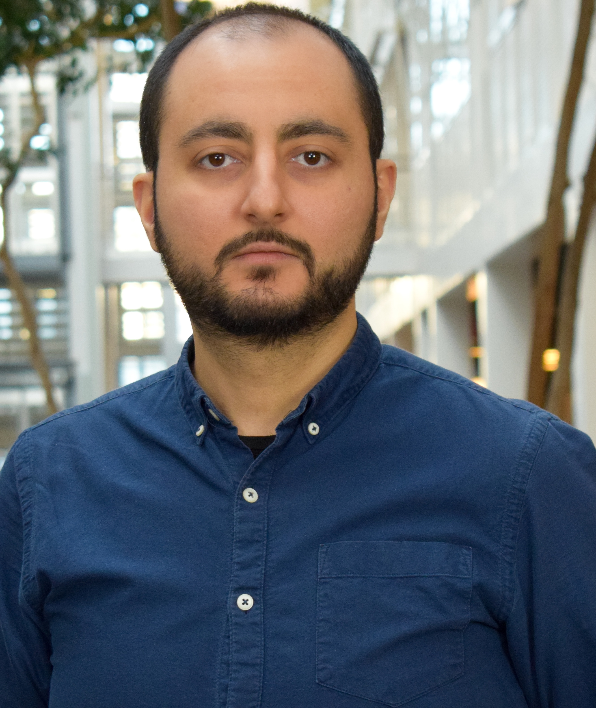

Learning-based network control
Reinforcement learning, multi-agent and hierarchical RL, data-driven control, uncertainty-aware modelling, and explainable engineering inference for communication-system decision making.
Wireless communications, 5G/6G and non-terrestrial networks, AI-native network management, machine learning for engineering systems, and information-theoretic learning.
I am an Assistant Professor at Aalborg University, Copenhagen, and a Researcher at KTH Royal Institute of Technology, Stockholm. My work spans wireless and networked systems, mobility management, localisation, uncertainty-aware inference, dependable communication-system control, and system-level optimisation.
Across these themes, I combine communication-theoretic reasoning with data-driven learning to design robust methods for future telecommunication systems and resource-constrained engineering environments.

Research profile grounded in future telecommunications, learning-based control, and engineering decision support.
My research focuses on machine learning for engineering systems, information-theoretic learning, wireless communications, AI-native network management, non-terrestrial networks, uncertainty-aware inference, localisation, and engineering decision support.
Selected directions distilled from the CV into website-friendly topics.
Reinforcement learning, multi-agent and hierarchical RL, data-driven control, uncertainty-aware modelling, and explainable engineering inference for communication-system decision making.
Architectures and algorithms for terrestrial, aerial, and non-terrestrial systems, including mobility management, resource allocation, reliability, and AI-assisted orchestration.
Model selection, dataset design, representation learning for physical-layer data, and reliable inference under data scarcity and distributional shift.
Recent roles and activities that can be updated easily over time.
A few representative publications from the full list.
Appointments, project leadership, teaching, and service.
Research and teaching in wireless communications, networking, Internet of Things, and machine learning for communication systems.
Research on aerial communications and networking, non-terrestrial networks, wireless power transfer, machine learning, and IoT, together with technical coordination in academic–industry collaborations.
Technical coordination and proposal leadership in a CELTIC-NEXT project with 20+ partner entities across 8 countries.
Project management and technical coordination for integrated terrestrial and non-terrestrial network research and stakeholder engagement.
A dedicated section for highly motivated candidates interested in collaboration.
I welcome inquiries from highly motivated BSc, MSc, and PhD students interested in wireless communications, non-terrestrial networks, machine learning for engineering systems, reinforcement learning, localisation, and network management.
I am also interested in hearing from postdoctoral candidates whose background aligns with 5G/6G systems, NTN, AI-native networking, learning-based control, communication theory, or reliable inference for engineering applications.
For collaboration, supervision, invited talks, project discussions, or student/postdoc interest.
Mustafa Özger
Department of Electronic Systems
Aalborg University, Copenhagen, Denmark
Email: mozger@es.aau.dk
ORCID: 0000-0001-8517-7996